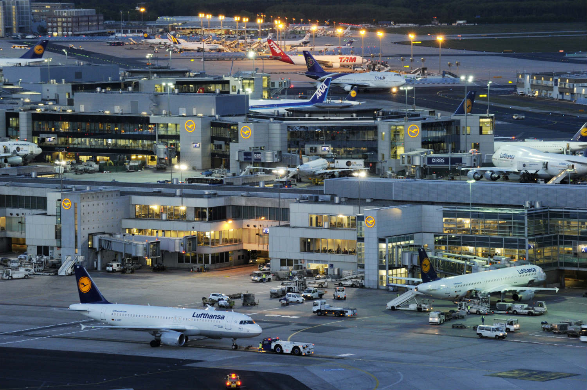
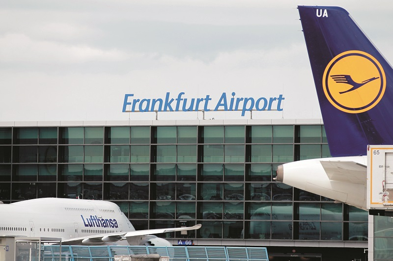
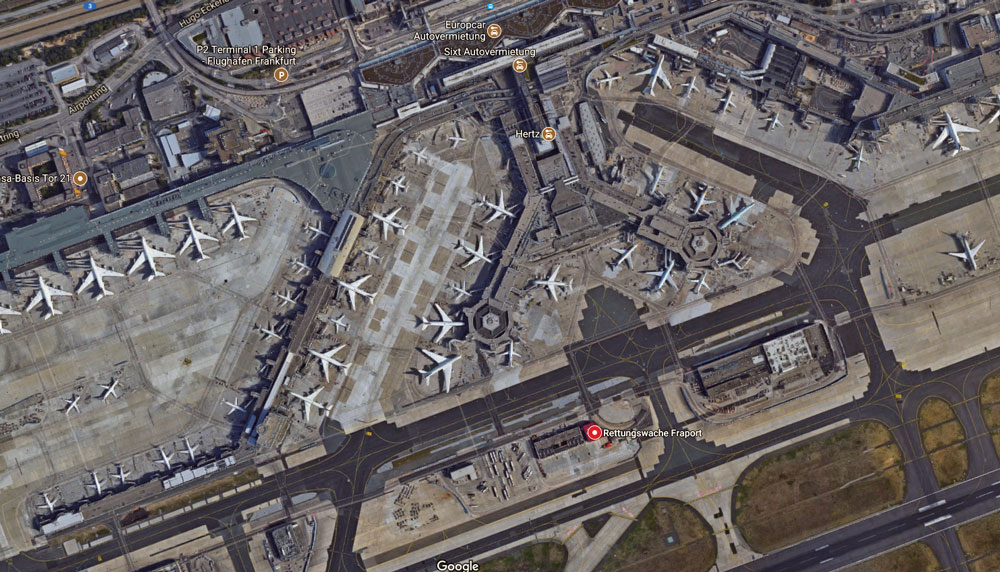

Verkehr
Die Stadt Frankfurt am Main ist dank ihrer zentralen Lage einer der wichtigsten Verkehrsknotenpunkte in Europa. Hier treffen Bahn, Straßenverkehr, Binnenschifffahrt und Luftverkehr aufeinander. In Frankfurt wurde 1909 die erste Fluggesellschaft der Welt (DELAG) gegründet. Frankfurt hat die achtbeste Infrastruktur aller Städte weltweit (bezogen u. a. auf Luftverkehr, öffentlicher Personennahverkehr und Verkehrsbelastung) und liegt damit vor Weltstädten wie London, Paris, Sydney, Tokio oder New York.
Flughafen
Die Stadt verfügt mit dem Flughafen Frankfurt am Main über einen der größten internationalen Flughäfen der Welt. In Europa ist er gemessen an der Zahl der Passagiere der drittgrößte nach den Flughäfen London-Heathrow und Paris-Charles de Gaulle. Beim Frachtaufkommen steht der Frankfurter Flughafen an erster Stelle in Europa. Im Jahr 2013 wurden 58,04 Millionen Passagiere und 2,13 Millionen Tonnen Fracht befördert.


